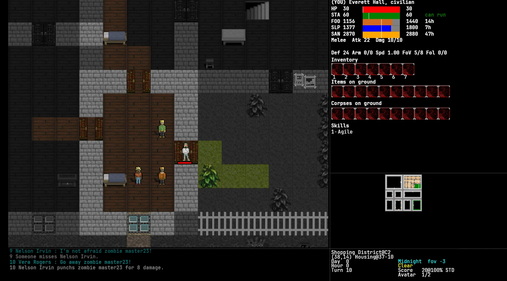
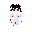

Rogue Survivor: Reloaded
It's midnight. Something in your bedroom wants your brain.
You kicked and punched until it stopped moving. Then another came through the window, and another through the door. Rogue Survivor is a turn-based, real-time survival roguelike set in a city that keeps flooding with the undead.


Port & Comparison
From C# WinForms to TypeScript
Rogue Survivor: Reloaded is a faithful TypeScript and HTML5 Canvas port of Jacques Ruiz's original 2012 C# survival roguelike. Below is a comparison between the original version and the modern browser port, preserving the exact layout, mechanics, and gameplay experience.


Main Changes
- Improved resized UI with choosable fonts
- Choosable sprite styles
- Choosable game modes: Classic from Alpha 10.1, Still Alive fork, and Reloaded own improvements.
- Mouse support on menus
- In-game zoom
- Improved performance and memory usage
- Multi-OS + Browser
- An old-school 3D (!) First-Person mode. VERY experimental!
The game
Surviving, not rampaging
Rogue Survivor handles combat and progression differently from most roguelikes. You are just an average human, and you have to be cautious. There is no difficulty ramp tied to your level, and no amount of skill turns you into a superhuman. If a place or a foe is too hard, run!

Survive
Play as living or undead. Survive the zombies... and the humans. The undead get stronger every day. Reincarnate when you die and continue playing as another character. Day/Night cycle and weather will affect your playthrough.

The city
The map is a grid of districts: residential, business, shopping, green, plus a sewer network under each one and a subway line across the middle. Leave a district and the game keeps simulating it without you.

You are not alone
Survivors panic, trade, murder each other for food, and can be talked into following you. Trust builds slowly, orders can send them into rooms they should not enter, and cops have a licence to kill murderers. Beware of gangs!

Something else is going on
Your home town is the headquarters of the C.H.A.R. Corporation, and there are persistent rumours about them. There is also an urban legend about something large living in the sewers...
Running it
Running the game
If you just want to play, you can download the latest release for desktop or play in your browser. For developers, the project can be run and tested locally.
DOWNLOAD AND PLAY
You can download the executables to play offline (and with better performance vs the browser version)
DEVELOP AND PLAY
Requires Node 20 or newer.
cd web && npm install && npm run dev
Vite dev server on localhost:3000, with hot reload.
DESKTOP BUILD
npm run build:release
Packages the same static bundle as a native app through Neutralino, so it runs without a browser or a local server.